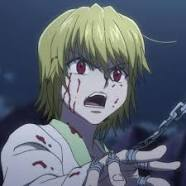

How I got into the series
Finished yu yu hakusho another great series, and this was written by the same author

Finished yu yu hakusho another great series, and this was written by the same author
Gon is a pretty interesting character who is a lot more than what meets the eye

Killua is probably the coolest thirteen year old who you'll ever see

Kurapika is sasuke done right, concluded
